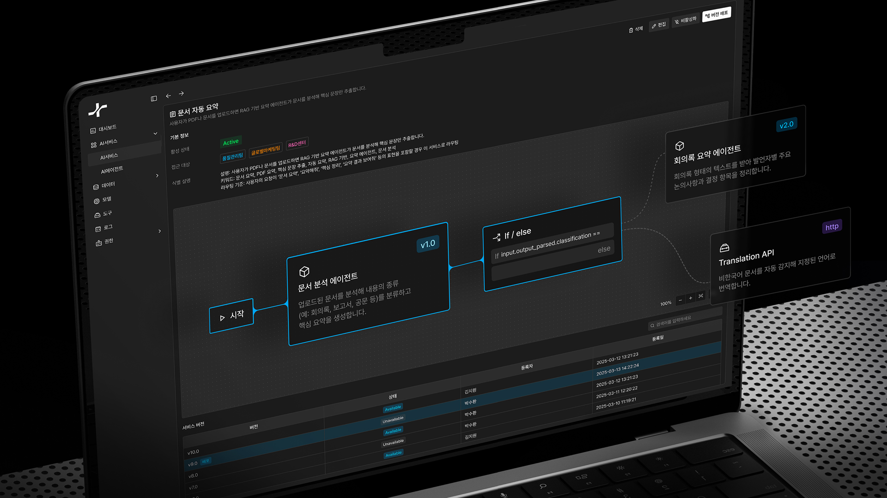

Exemble — 사내 문서 기반 LLM 워크플로우 환경 설계하기
B2B 프로덕트 디자인 · 2025.10 - 2026.01
Exemble은 기업 내 데이터와 자체 모델로 구성된 에이전트들을 워크플로우로 구성하여, 채팅을 통해 다양한 업무를 수행하는 온프레미스 AI
플랫폼입니다. 사용자용 채팅 · 워크플로우부터 관리자용 운영 · 권한 · 모니터링까지 핵심 경험들을 설계하고, 초기 서비스 기획부터 팀의 단독
디자이너로서 프로젝트를 주도했습니다.
